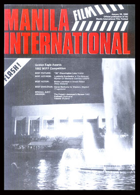

History & Accomplishments

Alto Broadcasting System
https://www.facebook.com/KlasikaPINAS/posts/the-abs-alto-broadcasting-system-studio-in-the-early-50s/2968500476575622/
Filipino Teleseryes
https://r3.rappler.com/entertainment/tv/252259-list-abs-cbn-teleseryes-made-impact-television
Philippine Television
Television in the Philippines was introduced in October 1953. Alto Broadcasting System now known as ABS-CBN was the first commercial broadcast in the country. TV networks opted in airing American TV programs since it was cheaper to buy the rights to air it than producing local shows. During the Martial law period, the government closed several networks, nationwide satellite broadcasting emerged, so did current affairs programs, public service and non-news informative programs. After the Marcos dictatorship ended in 1986, ABS-CBN network returned. Around early and mid-1990s, Local sitcoms, Political Satire, were on the rise, Mexican Telenovelas entered Philippine television and subsequently inspired the rise of the Filipino Teleserye.
Jose Nepomuceno, “Father of Philippine Cinema"
https://thephilippinestoday.com/jose-nepomuceno-father-of-filipino-films/
Promotional Poster for the 1st MIFF
https://pelikulaatbp.blogspot.com/2008/04/1st-manila-international-film-festival.html
Philppine Film
The introduction of the first moving pictures to the country sparked the start of the Cinema of the Philippines during August 31, 1897. Filipino filmmaker Jose Nepomuceno, also known as “Father of Philippine Cinema” made the first movie, Dalagang Bukid, which marked the start of cinema in the Philippines. In the 1950s, there was significant improvement in cinematic techniques in filmmaking, this was also the first golden age of philippine cinema, artistic and mature films emerged from this age. In 1982, the first Manila International Film Festival was organized by first lady Imelda Marcos to promote them and be distributed worldwide. After the People Power Revolution, Filipino Film quality started declining, where filmmakers opt to make mass produced ones for commercial success or pito-pito films, which are shot in seven to ten days to recoup its minimal cost of production. This made films have terrible or have rehashed storylines, acting was mediocre and the ideas are copied from more famous films from other countries. In the 1990s, most films became recycled, storylines, and love teams that were popular are redone but with different titles, although slapstick comedies still are very popular.
Milestones
1890s
Cinematography was first introduced in the Philippines by a Spanish soldier named Antonio Ramos.
1900s
A renewal of movie houses began in the early 1900s.
1910s
In 1919, the first Filipino film produced in the Philippines, "Dalagang Bukid" by Jose Nepomuceno was released and he became known as the Father of Philippine Cinema.
1930s
Stories from Philippine literature began to be the main sources of storyline and characterization for films. In March 9, 1933, Jose Nepomuceno’s film Punyal na Ginto (Golden Dagger) was the very first local film that was produced with sound.
1940s
The locals embraced the Philippine cinema’s focus on war and heroism.
1950s
Manuel Conde created the first asian film Genghis Khan that screened at the Venice and Cannes Film Festivals. Television was introduced to the Philippines in October 1953.
1960s
Filmmaking gave way to new independent production outfits. Also introduced new and different film genres for the local audience to explore. Such as Western, Musical, and Action.
1970s
The government created a censorship board that regulates films and would ban those who would criticize the administration. The second golden era of Philippine cinema occurred in the late 70s.
1980s
In the 80s it was the peak of the second golden era of Philippine Cinema. Despite the government’s censorship mandate. Filmmakers that pushed Filipino cinema during this dark and dangerous period are Ishmael Bernal, Celso Ad. Castillo, and Mario O’Hara.
1990s
Despite the increase of production cost, extremely high taxes, censorship, and piracy film industries flourished and churned out about 200 films per year.
2000s
The digital age in filmmaking arrived to our local industries.
Current Issues
https://www.getrealphilippines.com/wp-content/uploads/2011/12/filipino_films.jpg
The field of AudioVisual Media in the Philippines is underdeveloped compared to other countries, there has been no development with CGI techniques, Storytelling and narrative in most series produced recently. Due to the overall lack of quality in serialized shows and mainstream movies, the general public has turned to globalization and the different shows and movies made by foreign countries. People usually look down on those that want to work in the Creative Arts because of its obtuse career path. This has driven would-be artists and directors off the field and they may have been pressured to take a course in a more safe and known field. Which is why the film industry in our country is considered to be “dying”. This makes it a repeating cycle which destroys the possibilities of future development for Audio-Visual Media as the current generation does not produce results that can inspire future generations to take on the field, and make it more stable with a large range of quality and variety.
The Need To Promote
https://en.wikipedia.org/wiki/Cinema_of_the_Philippines
We need to promote local Film and Media because if we don’t, Globalization will have its way and there will no longer be any original work that comes out of the country with any actual international success. By promoting the film industry with a good representation of concepts for the films and shows would help bring exposure to Philippine films and series. Film and Media are crucial to society as they give us forms of entertainment and an escape from real life. They allow us to see into a world that isn’t our own and dream of what could be. The average Filipino relies on their television shows and dramas to unwind after a hard day at work and they watch movies with their family when they can.
Majority of people in the Philippines have certain access to AudioVisual media, mainly due to how common it is to have a cell phone nowadays. But there are also people who use TV as their source of AudioVisual entertainment or information, either from their homes or from the ones available in public areas, or by going to computer shops where they can access the internet via computer.
The Impact of Promotion
If properly promoted and supported, the domain of Film & Media could have a large impact on the lives of Filipinos. Majority of underprivileged Filipinos look to their TVs and cellphones for comfort after a long work day, usually watching an episode of a teleserye they like that’s airing at the time. For some Filipinos however they have seen the same teleseryes and shows airing in the Philippines for a considerable amount of time, so they resort to more foreign shows and films to seek new storylines and plots. If money and time were actually put into developing the industry in the Philippines then it could spark a clearer sense of nationalism and unity among Filipinos. Instead of relating to a poor but up and coming Korean in a show where they have to rely on subtitles, it would be way more influential if the story was of a fellow Filipino rising up in the same nation they call home.
Challenges
Most Filipinos would rather watch media made by foreign people.
The overall quality of SFX in the locally made media lacks polish and looks outdated and even absurdly off at times.
The same plotlines are regurgitated time after time but people still watch them, leaving no room to expand on the common tropes in Filipino media.

Overall lack of support and funding from the government.
They often use the fame of the actors to boost their series instead of going for the quality as a whole.

Excessive taxation in the film industry.
Workable Solutions
Producing short animated stories with a good concept and writing.
Proper story writing workshops where aspiring young filmmakers can develop necessary skills to produce good films with good concepts and elements in its story.
A charity support program that reaches out to run-down neighborhoods and arranges plays for the people.
Promoting free screenings of old popular local films in run-down areas, which would help the underprivileged people to also have other options for entertainment.
Providing low budgeted local production industries support programs that give them financial assistance that helps them get the resources needed for production.
Create Animation studios within the country to provide competition for live action series producers.
https://www.adobomagazine.com/the-magazine/philippine-cinema-in-focus-insights-on-the-industry-at-present/
Importance
Film and Media are crucial to society as they give us forms of entertainment and an escape from real life. They allow us to see into a world that isn’t our own and dream of what could be. The average Filipino relies on their television shows and dramas to unwind after a hard day at work and they watch movies with their family when they can.
https://escp.eu/news/corporate-globalization-imaginary-enemy
Effects of Globalization
Globalization brings new media into our society and this could be what inspires a generation of people to want to make films and shows. New technology can also make creating media easier and be of higher quality and fidelity. On the other hand, Globalization also provided an avenue for people to turn their back on local works and pour all their attention on foreign works. This hurts our industry because without interested viewers, any good project may just be doomed to fail due to the lack of attention.
Members

Michael Torres
Layout Designer
Sources
http://filipinocares.blogspot.com/2016/12/filipino-culture-cinema-and-media.html
https://iskomunidad.upd.edu.ph/index.php/Fin_to_Film:_Philippine_Film_Industry_in_the_Age_of_New_Media_and_Digitalization
https://www.fareastfilm.com/eng/archive/catalogue/2007/il-declino-e-la-caduta-dellindustria-cinematografica-delle-filippine/?IDLYT=31711
https://wonder.ph/popculture/pinoy-tv-shows/
https://www.pep.ph/guide/tv/150919/pinoy-tv-series-a721-20200423-lfrm
https://legacy.senate.gov.ph/lisdata/3127528174!.pdf
https://riannehillsoriano.com/blog/philippine-cinema-in-the-2000s-issues-to-solve-in-the-film-industry/?fbclid=IwAR0rooyGYkcWe8dUJyn7gkt5sU4FjVpis8ec80IEYKewo8VeTgkiDBWG9XY
https://www.manilatimes.net/2021/09/26/the-sunday-times/arts-awake/ph-cinema-is-not-dead-it-is-changing-and-evolving/1816051?fbclid=IwAR2VmEEpEzcw5VALybgP2Zc7EJ8ExUb5ZQ2RxPIAM4RxC3nuMS3dEH_NZDk&__cf_chl_tk=O_eidj4uWhR1qJW433X2u0kIz75NO5CAQNAP85LMMo8-1666542780-0-gaNycGzNB2U
https://www.researchgate.net/publication/305828415_Perceived_Status_of_the_Filipino_Film_Industry_Implications_for_Media_Education
https://www.fdcp.ph/updates/need-national-aid-film-and-audio-visual-industry
https://en.wikipedia.org/wiki/Philippine_television_drama
https://en.wikipedia.org/wiki/Television_in_the_Philippines#:~:text=Television%20in%20the%20Philippines%20was,in%20Asia%20to%20do%20so.
https://en.wikipedia.org/wiki/Cinema_of_the_Philippines
https://reelrundown.com/film-industry/filipino-movies#:~:text=Films%20were%20first%20shown%20in,became%20slang%20for%20the%20movies.